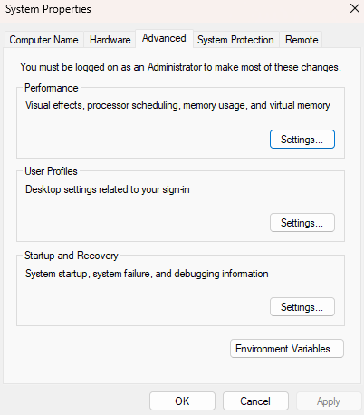
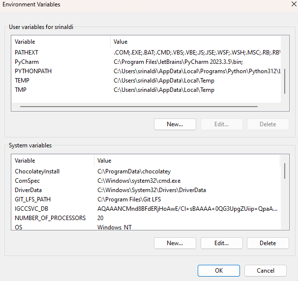
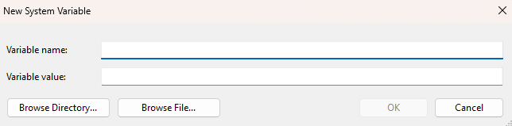

Setting up environment variables
Several UASAL repositories and/or python packages require environment variables to be configured in order to read in a configuration correctly. In context of configuration repos such as config_stp or config_um, the environment variable is set to a remote file server so that on package usage, the path to the file server is automatically expanded.
Environment Variable Setup
Linux / macOS
Check which environment variable your configuration repository is using
Reference the README or inspect the config files for paths prepended by
$, e.g.$SERVER.Temporarily add the environment variable to your session
In a terminal, type the following and press Enter:
export ENV_VARIABLE=/path/to/server
Permanently add the environment variable
Add the export command above to one of your shell config files:
~/.bashrc~/.bash_profile~/.zshrc~/.profile
Then apply the changes with:
source ~/.bashrc
Verify the environment variable
Open a new terminal and run:
echo $ENV_VARIABLE
Windows
Check which environment variable the configuration repository is using
Reference the README or inspect the config files for paths prepended by
$.Temporarily add the variable for the current Command Prompt session
set ENV_VARIABLE=\\path\to\server
Replace with the actual UNC path to your network location.
Permanently add the environment variable
Search “Environment Variables” in the Start Menu 
Open “Edit the system environment variables” and click “Environment Variables…” 
Under User variables or System variables, click New: - Name:
ENV_VARIABLE- Value:\\path\to\serverClick OK to save.
Verify the environment variable
Open a new Command Prompt or PowerShell window and run:
echo %ENV_VARIABLE%